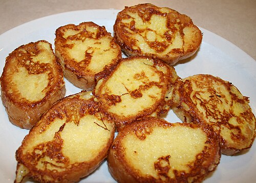

Home
French toast

French toast is a dish made by dipping slices of bread in a mixture of beaten eggs, often with
milk or cream, and then frying them. It's a popular
or brunch item, often served
with toppings like syrup, fruit, or whipped cream.
Ingredients
- ¼ cup all-purpose flour
- 1 cup milk
- 3 large eggs
- 1 tablespoon white sugar
- 1 teaspoon vanilla extract
- ½ teaspoon ground cinnamon
- 1 pinch salt
- 12 thick slices bread
Steps
- Measure flour into a large mixing bowl. Slowly whisk in milk. Whisk in eggs, sugar,
vanilla extract, cinnamon, and salt until smooth.
- Heat a lightly oiled griddle or frying pan over medium heat. Meanwhile, soak bread slices
in milk mixture until saturated.
- Working in batches, cook bread on the preheated griddle or pan until golden brown on
each side.